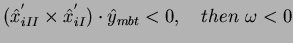

Once you have figured out the coordinate origins for two consecutive bases or base-pairs comprising a step you proceed to define a middle step triad (MST) [3].
This can be described by the following procedure:
1) Find the angle between consecutive z-axis. Since these are unit vectors, then from dot product definition:
| (1) |
2) Then find the vector which results from doing the cross product of consecutive z-axis (that is, the normal to the plane formed by the 2 vectors), this is called the Roll-Tilt axis and then normalize to make it a unit vector ,
| (2) |
3) To make the two consecutive z vectors coincide, you use can just use a linear homogeneous transformation of the plane so that the original orientation matrices and are rotated degrees by to get the transformed and orientation matrices.
| (3) | |
| (4) |
The origin of coordinates for the MST is just the average of the
position vectors for the  and reference frames,
and reference frames,
| (5) |
4) Again using the dot product you can find the angle between the transformed vectors and this is just the Twist () and also if you just do the dot product of the unit vector with the vector resulting of the cross product of and you get the sign of . Since the transformed x-y plane is orthogonal to then this applies in the same manner for x,
| (6) | |
| (7) | |
| (8) |
if normalized beforehand then the rule should be,
| (9) | |
| (10) |
5) With more dot product we can find other angles, like one called ,
| (11) | |
| (12) | |
| (13) |
and then,
| (14) | |
| (15) |
which are the remaining angular degrees of freedom for step parameters.
Now to get the remaining 3 translational degrees of freedom for step parameters one just needs to do:
| (16) |
To get the base-pair parameters the procedure is completely analogous so that
, and are the analogs of  , and
now the MST is called MBT (Middle Base Triad) and the axis which are made to
coincide are the y-axis and not the z-axis as in the base-step case,
, and
now the MST is called MBT (Middle Base Triad) and the axis which are made to
coincide are the y-axis and not the z-axis as in the base-step case,
| (17) | |
| (18) | |
| (19) | |
| (20) | |
| (21) | |
| (22) | |
| (23) | |
| (24) | |
|  | (25) |
| (26) | |
| (27) | |
| (28) | |
| (29) | |
| (30) | |
| (31) |